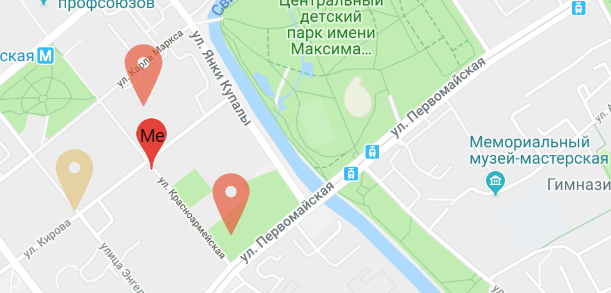
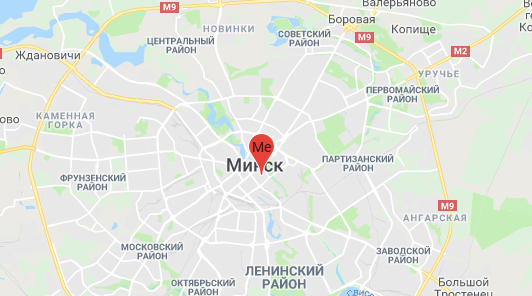
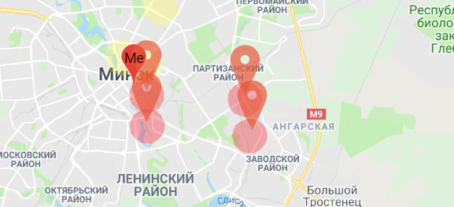

<mat-card [class.alternative]="changeTheme" class="headerHelperCard">

  <table class="table">
    <tr class="border">
      <td class="option-text"><span [routerLink]="['/news']" routerLinkActive="router-link-active"  class="sign-in">News</span></td>
      <td colspan="5">Eco news from popular "green" sources</td>
    </tr>
    <tr>
      <td class="option-text"><span [routerLink]="['/map']" routerLinkActive="router-link-active"  class="sign-in">Eco maps</span></td>
      <td colspan="5">
        <!--  -->
        <!--  -->
        
       <span class="map-description">Eco maps will help you to participate in 'green' event & avoid pollution</span>
      </td>
    </tr>
    <tr>
      <td class="option-text"><span [routerLink]="['/house']" routerLinkActive="router-link-active"  class="sign-in">Eco house</span></td>
      <td colspan="5">Some extra information about dwelling</td>
    </tr>
    <tr>
      <td class="option-text"><span [routerLink]="['/car']" routerLinkActive="router-link-active"  class="sign-in">Eco car</span></td>
      <td colspan="5">Some extra information about car: economy & ecological alternatives</td>
    </tr>
    <tr>
      <td class="option-text">Cabinet</td>
      <td colspan="5">You will open this function after you will <span (click)="openSignIn($event)" class="sign-in">Sign
          in</span></td>
    </tr>
  </table>

</mat-card>
